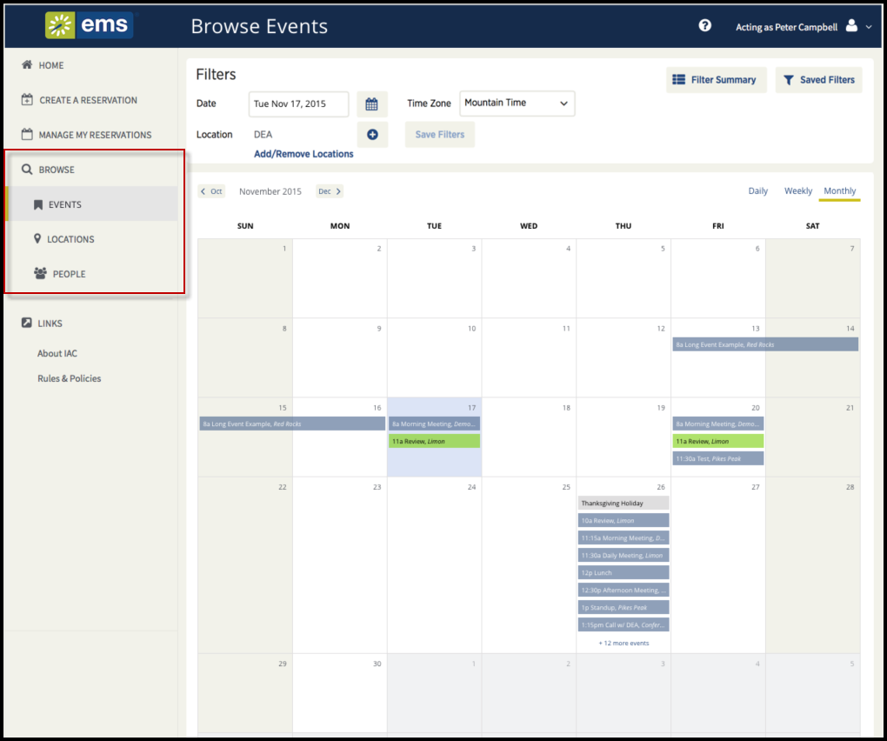

The BROWSE section of the main
This section will provide information that will allow you to do the following:

Browse Section of the EMS Web App
The previous version of this application, Virtual EMS (VEMS), had different menu options. See the following table for a comparison of VEMS and Web App menu options.
|
Menu in VEMS |
Menu in EMS Web App |
How Is This Better? |
|---|---|---|
|
My Requests |
Events |
Expands the view to all events, instead of only those you requested |
|
Browse for Space |
Locations |
Expands the view to Facilities, Buildings, Views (custom collections of space), and Room |
|
Browse Groups |
People |
Expands the view to Groups, individual Users, and custom user types |